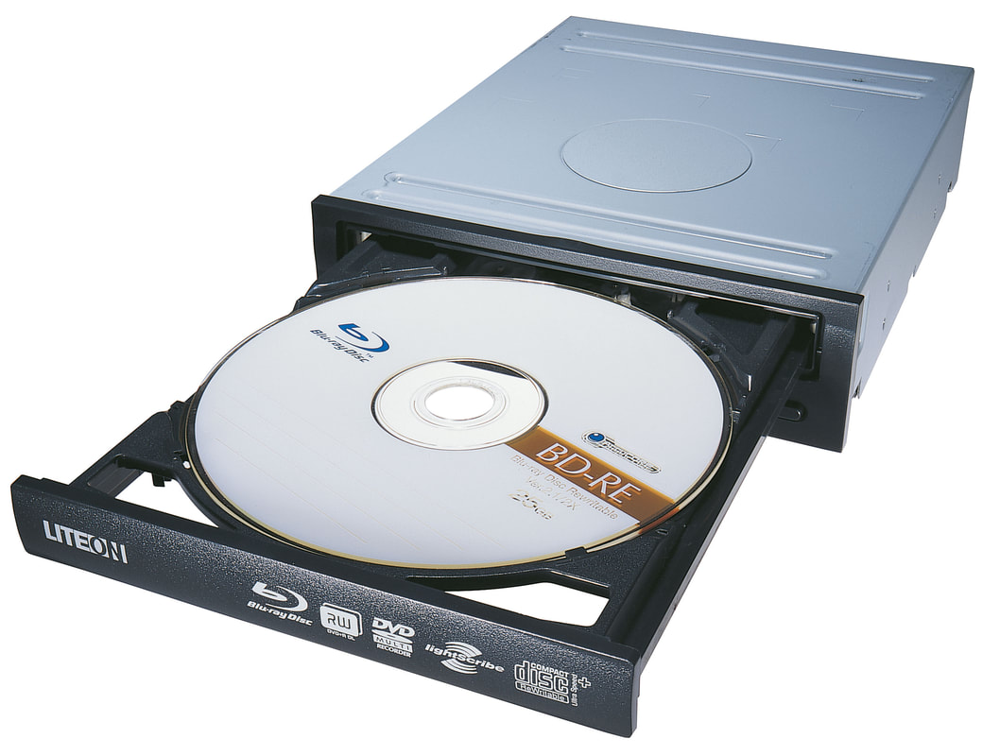

Unidad optica

En el campo de la informática, y la reproducción de sonido y de
video, un disco óptico es un disco circular en el cual la información
se codifica, se guarda y se almacena, haciendo unos surcos (pits)
microscópicos con un láser sobre una de las superficies planas que
lo componen, que suele ser de aluminio.[2] El material de
codificación se sitúa por encima de un sustrato de mayor grosor,
generalmente de policarbonato, que constituye la mayor parte del
disco. El patrón de codificación sigue un recorrido en espiral
continuo que cubre la superficie del disco entera, extendiéndose
desde la pista más interna hasta la más externa. El acceso a
los datos, lectura, se realiza cuando esta superficie es
iluminada con un haz de láser generado por un diodo láser
dentro de la unidad de disco óptico la cual hace girar el
disco a velocidades alrededor de 200 RPM a 4000 RPM o más,
dependiendo del tipo de unidad, el formato de disco, y la
distancia desde el cabezal de lectura hasta el centro del
disco, las pistas internas son leídas a una velocidad mayor.
Los surcos en la superficie modifican el comportamiento del haz
de láser reflejado y nos dan la información que contiene el disco.
De ahí que la mayoría de los discos ópticos tengan su característica
apariencia iridiscente creada por las hendiduras en la capa
reflectiva.[3][4]
El reverso de un disco óptico generalmente tiene impresa una
etiqueta impresa o estampada en el disco mismo mediante serigrafía
u ófset. Este lado, sin codificar, del disco es típicamente cubierto
con un material transparente, en general laca. A diferencia de otros
soportes como la memoria USB, la mayoría de los discos ópticos no
tienen integrada una carcasa protectora y por lo tanto son
susceptibles a los problemas de transferencia de datos debido
a rayaduras, grietas, huellas, y otros problemas del entorno.
Aunque las huellas, el polvo y la suciedad en muchos casos
pueden ser removidas con un paño húmedo con detergente suave[5] y
los sistemas de corrección de errores de los reproductores
modernos permiten leer hasta cierto punto a través de los
defectos.
Los discos ópticos en general tienen un diámetro de entre 7,6 y 30
centímetros, siendo 12 cm el tamaño más común. Un disco típico
tiene un grosor de 1,2 milímetros, mientras que el largo de pista,
la distancia desde el centro de una pista hasta el centro de
la siguiente, es en general de 1.6 µm (micrones).[6]